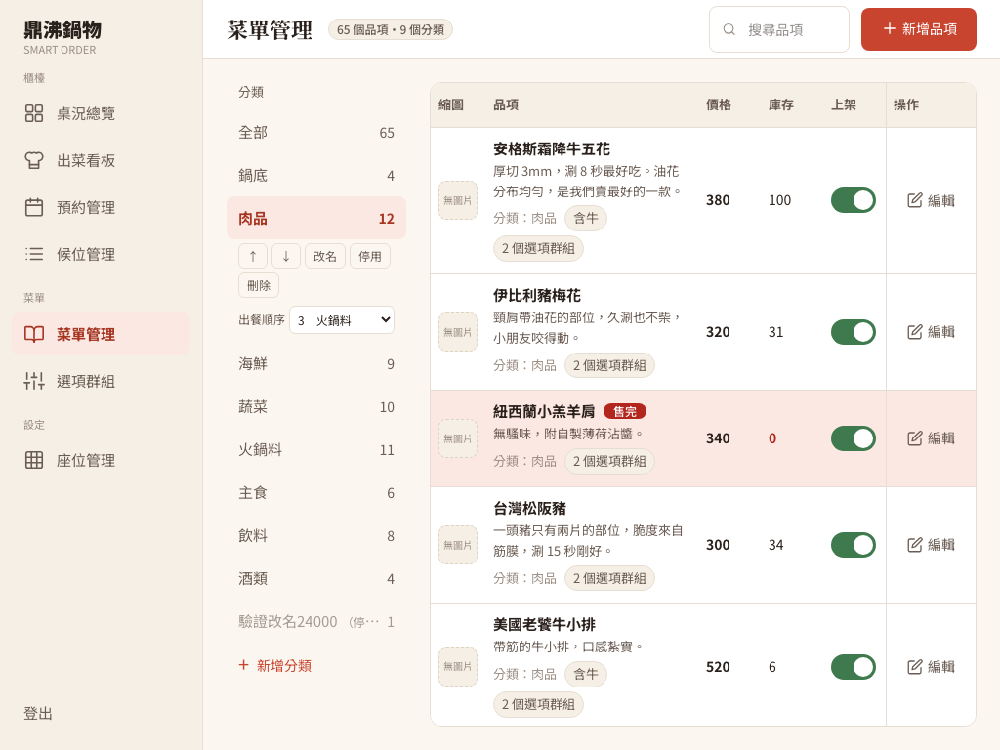
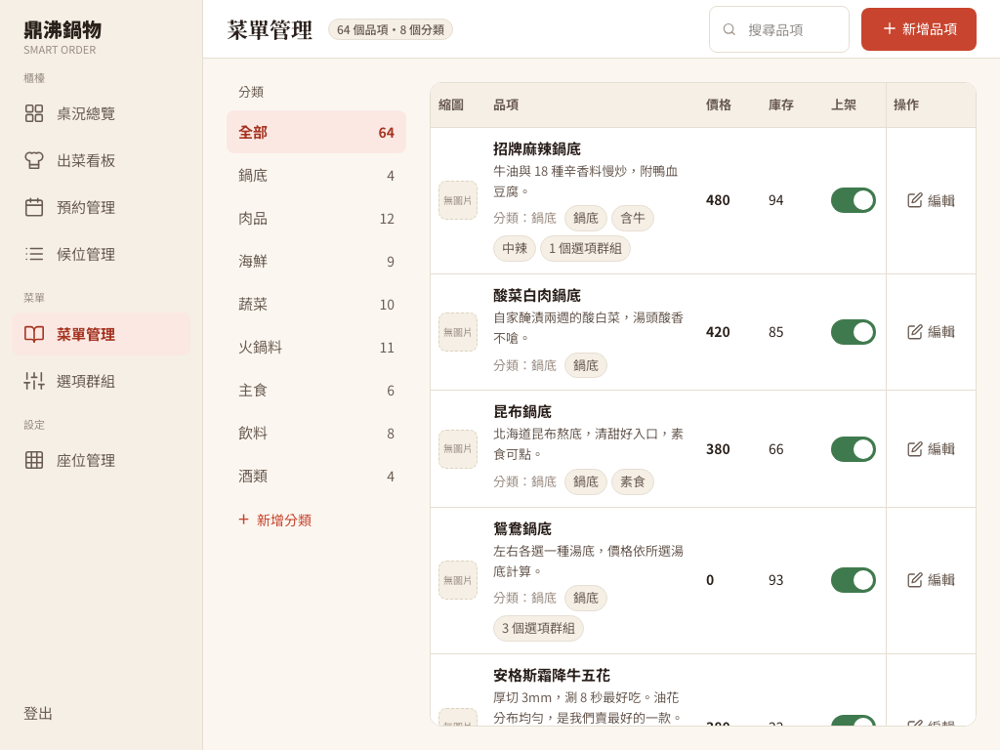
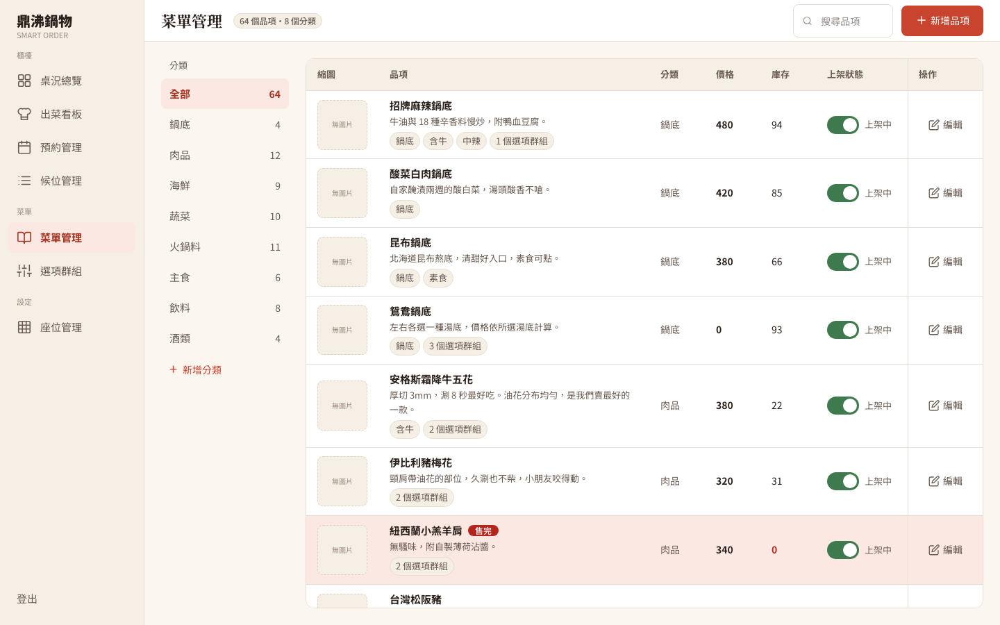

門沒鎖、停用沒用、刪除會爆、平板看不到按鈕
後台 API（Application Programming Interface，應用程式介面）每次都要答兩題：你是誰（認證，員工登入拿到 JWT（JSON Web Token，登入憑證））、你能做這件事嗎（授權，JWT 裡的角色：店長 MANAGER、櫃檯 COUNTER、廚房 KITCHEN）。API 規格 §2.4 規定菜單管理只給店長。SecurityConfig.java 的規則由上往下比對，第一條符合的就決定結果，最後一條是「其他 /api/** 一律放行」。實作路徑是 /api/order/admin/**（規格寫 /api/admin/menu/**），這次以實作為準，只補權限。
1. 菜單後台掉進了「一律放行」
新增分類、讀含下架品項的後台菜單、品項上下架、刪除分類，四種都回 200。平常沒發現，因為門沒鎖時「沒帶鑰匙」和「有帶鑰匙」看起來一樣。
SecurityConfig 沒有 /api/order/admin/** 的規則，落入放行。讀 JWT 的 StaffJwtFilter 又只處理 /api/admin/ 開頭的路徑，只加規則、不改過濾器，連店長都會被擋。圖片上傳（Cloudflare R2 儲存）也只有環境變數開關 R2_ALLOW_ANONYMOUS_UPLOADS，沒有「只給店長」。
2. 停用的分類，顧客還看得到
顧客端用 findAll() 查分類，沒看 active；查品項只看品項自己有沒有上架。修正前實測：停用分類後，分類清單、品項清單、品項詳情照樣打得開；新分類排序值一律是 0，也沒照排序值排。
3. 刪除還有品項的分類，回 500
MenuCategoryEntity 設了 cascade = CascadeType.ALL（連帶操作），刪分類時 JPA（Jakarta Persistence API）會連品項一起刪，但品項有庫存資料指著它，Hibernate 丟例外，店長只看到 500。就算刪成功也不對，品項可能已在客人訂單裡。
4. 平板上看不到編輯按鈕
UI（User Interface，使用者介面）規格從 1024px 起。1024px 時表格只剩 558px 可顯示，最小寬度卻是 780px，右邊 222px（「上架狀態」和「操作」兩欄）看不到，外框又藏了捲軸，店長不知道能往右捲。
規則、讀憑證、查詢條件一起改，再補審查抓到的洞
第一版（commit 528f45b）
- 只放店長進來：在「一律放行」之前加
/api/order/admin/**需要MANAGER，連GET都擋（後台清單有下架品項）。StaffJwtFilter改看路徑前綴清單（/api/admin/、/api/order/admin/、/api/uploads/），新增後台路徑時要一起加。圖片簽發與確認上傳也只給店長，拿掉匿名開關。沒登入回401（前端導回登入頁），角色不對（如櫃檯）回403（只顯示「權限不足」）；顧客端/api/order/category、/api/order/items仍公開。 - 顧客只看「品項上架、分類也啟用」的：分類只拿啟用的並依排序值排；品項清單、搜尋、詳情都
JOIN分類加category.active = true，依「分類排序 → 品項排序 → id」排，順序才固定。 - 有品項的分類不能刪：先查底下還有沒有品項（含下架），有就回
409 CATEGORY_NOT_EMPTY「暫時不賣可改為停用」，空的才刪（204）。被訂單引用的資料應該停用，不是刪掉。錯誤格式也統一成共用的ApiExceptionAdvice：{ code, message, details }。 - 整合時補上的功能（不算原作者的缺失，依 M1 菜單規格 1.1–1.11）：分類可改名（重名回
409 CATEGORY_NAME_DUPLICATED）、上下移（前端送全部分類的新順序，對不上資料庫就回409 CATEGORY_LIST_CHANGED）、停用前跳確認；品項可標示鍋底、免費續加、追蹤庫存、素食、含牛、辣度 0–3，不合規則回400 VALIDATION_FAILED；「售完」改為算出來（追蹤庫存且庫存 ≤ 0）；optionGroupIds省略不動、空陣列全移除、有值整批取代。
審查後再修（commit 4b9a521）
沒參與實作的審查者看第一版，依嚴重度分級（P1 最嚴重）：沒有 P1，一個 P2、幾個 P3；整合者看 1024px 畫面和跑測試時又各找到一個問題。
顧客看不到停用的分類，但加入購物車和送單只檢查品項有沒有上架。客人停用前就打開菜單、或購物車已有那道菜，照樣能點、廚房照樣收單；系統卻寫「暫時不賣可改為停用」。
加入購物車與送單驗證都加「分類要啟用」，不合格回 409（送單沿用 ITEM_SOLD_OUT）。送單對分類加共享鎖（LOCK IN SHARE MODE），停用加排他鎖（FOR UPDATE）：共享鎖不互擋，多桌點同類菜不變慢，只有停用和送單排隊。停用提交後推 MENU_CATEGORY_CHANGED 到 /topic/menu，實測 49 毫秒內分類從客人畫面消失。
排序撞上刪除，Hibernate 丟例外回 500；排序整列寫回，蓋掉別人剛改的名稱或停用；按「停用」時前端連畫面上的舊名稱一起送，名字被改回去。
改名／停用、排序、刪除都先 SELECT … FOR UPDATE 鎖分類列，多列照 id 由小到大鎖；鎖完讀到的才是最新資料，不會寫回舊值，撞上刪除的排序回 409 CATEGORY_LIST_CHANGED。name 可省略，停用只送 {"active": false}；也拿掉 cascade = ALL。
第一次加鎖用 JPA 的 @Lock(PESSIMISTIC_WRITE)，連「改名」都回 500，紀錄寫 You have an error in your SQL syntax … near 'of mce1_0'。Hibernate 產生 FOR UPDATE OF 別名，那是 MySQL 8 的語法，團隊用的 5.7 不支援。
改成和其他 repository（資料存取類別）一樣的原生 SQL：SELECT * FROM menu_category WHERE id = :id FOR UPDATE。框架產生的 SQL 不一定每個資料庫版本都能跑，只讀程式碼看不出來，測試要在團隊實際用的資料庫版本上真的跑。
- 平板的快速上下架開關：第一版只把「操作」欄釘在右邊，「上架狀態」仍藏在捲軸後，但 S-05 規格要求開關直接放在表格列上。改成依寬度兩種版面：1280px 以上照舊；1024–1279px 縮小縮圖、拿掉「分類」欄（改成名稱下方小字），整張表不用左右捲，開關在 851–897px、編輯按鈕在 991px，都在畫面內。
- 遠端「隱藏全站捲軸」（Clara 的
d34cb19）：合併沒有衝突，重跑檢查按鈕仍在畫面內。但捲軸藏起來後「這裡還能捲」的提示也不見了，重要按鈕要在最小寬度直接看得到。
名稱真的不重複、排序擋舊畫面、出餐順序交給店長
commit 93e3700。前面列為已知限制的同名分類與舊畫面排序，收尾時補完了，另外把出菜看板「靠分類名稱判斷肉品」的問題從根本解掉。
兩位店長同時新增同名分類，3 輪都是兩個請求都回 201、資料庫有兩筆。原本「先查有沒有同名、沒有才新增」，兩個請求同時查都看到「沒有」。
加唯一索引 uk_menu_category_name，第二筆由資料庫拒絕、後端轉成同樣的 409；3 輪都是一個 201、一個 409，只有一筆。「先查」保留給一般情況友善的訊息，索引是同時發生時的最後防線。
店長 A 剛對調前兩個分類，B 的畫面還是舊順序、接著也排一次，兩次都回 200，A 的結果被蓋掉。
前端多送 expectedCategoryIds（我看到的順序），後端鎖住全部分類後比對，不同就回 409 CATEGORY_LIST_CHANGED、畫面重抓。這叫樂觀並發控制：不事先鎖，而是附上「我根據哪個版本改的」，版本不對就重來。
出菜看板看分類名稱是不是「肉品」決定排最後。把「肉品」改名後，牛五花就排到蔬菜前面。
分類多一個 cook_order，照 API 規格 §4.12 分六級：鍋底 1、菜盤 2、火鍋料 3、肉品 4、主食 5、飲料甜點 6（鍋底品項在哪個分類都排 1）。店長在分類操作列用下拉選單設定，超出 1–6 回 400，改名不再影響。順序是店長的設定，不該靠名字猜。


- 升級腳本
migrate_menu_category_guards.sql：先加cook_order並依名稱回填，再加唯一索引。若已有同名分類，腳本停在ERROR 1062 Duplicate entry、不刪任何資料，請先人工改名再整份重跑；實測改名後成功，第三次重跑什麼都沒改。審查提到的說明補在2ece1fd。 - 已知限制的結果：同名與舊畫面排序已修（見上）；取消舊單時依現在的「是否追蹤庫存」補庫存，已改成訂單明細記下送單時有沒有扣庫存，見 YiTing 點餐交易文章的後續修正。仍存在：品項剛被搬進停用中的分類、同時又有人送單的三方情境，MySQL 偵測到死結會取消其中一個請求並回錯誤，不會卡住。
數字與證據
528f45b／4b9a521：菜單專項 95 項加基線 36 項，共 131 項 HTTP 與資料庫檢查全過，三種同時操作（送單對停用、排序對刪除、排序對改名）各跑 3 輪並附修正前重現；點餐、購物車、結帳回歸（56、200、108、156 項）也過。HTTP 紀錄- 瀏覽器 17 項全過：1024px 開關與按鈕可見、1440px 欄位完整、櫃檯看到權限不足、顧客菜單即時拿掉停用的分類。瀏覽器紀錄
93e3700：新功能 39 項加基線 36 項、瀏覽器 6 項全過，相關回歸也過，獨立審查沒有 P1／P2。HTTP 紀錄、瀏覽器紀錄- 自己重做：不帶憑證打菜單後台與上傳簽發回 401，櫃檯帳號回 403，顧客端分類清單仍公開；停用分類後顧客端 404、加入購物車 409。測試在隔離的 MySQL 5.7 容器進行，沒連真的 R2。




本篇真的用到的
- Spring Security＋JWT 角色權限：401／403 分工、自訂過濾器讀員工 JWT（
SecurityConfig.java、StaffJwtFilter.java）。 - 悲觀鎖與固定鎖順序：
FOR UPDATE鎖分類列、多列照 id 排序，送單用共享鎖（MenuCategoryService.java）。 - 樂觀並發控制：排序帶
expectedCategoryIds，版本不對回 409。 - 唯一索引當最後防線：防同名分類（
uk_menu_category_name）。 - Spring Data JPA 查詢方法與
JOIN：顧客端只查「品項上架且分類啟用」。 - DTO（Data Transfer Object，資料傳輸物件）與統一錯誤格式：
SaveMenuItemRequest、ApiExceptionAdvice。 - 交易提交後才推播：停用後推
MENU_CATEGORY_CHANGED（Spring WebSocket）。 - React 依寬度切換表格版面：1024px 平板與 1280px 以上兩種欄位配置（
AdminMenu.tsx）。 - 學到什麼：寫後台 API 先問「這個網址誰打得到」，預設拒絕、明確放行；測權限要拿「沒憑證」和「角色不對」各打一次，只用店長測看不出門沒鎖。被訂單引用的資料要「停用」不要刪。
新手名詞表
- JWT（JSON Web Token）
- 登入後拿到的憑證，記著員工編號、角色與過期時間，有簽章防竄改。
- 過濾器（filter）
- 請求進到 controller 之前先經過的程式；
StaffJwtFilter在這裡讀 JWT。 - HTTP 401／403／409
- HTTP 是 Hypertext Transfer Protocol（超文字傳輸協定）。401 沒登入；403 權限不夠；409 請求沒錯但和目前資料衝突。
- JPA 與 Hibernate
- JPA 是 Java 操作資料庫的標準寫法，Hibernate 是本專案用的實作。
- cascade（連帶操作）
- 對父資料（分類）的操作自動套到子資料（品項）；
CascadeType.ALL包含刪除。 - 共享鎖與排他鎖
- 共享鎖之間不互擋但會擋排他鎖；排他鎖（
FOR UPDATE）一次只讓一個人改。 - M1／S-05
- M1 是「菜單與品項」模組規格；S-05 是 UI 規格裡「菜單管理」畫面的編號。